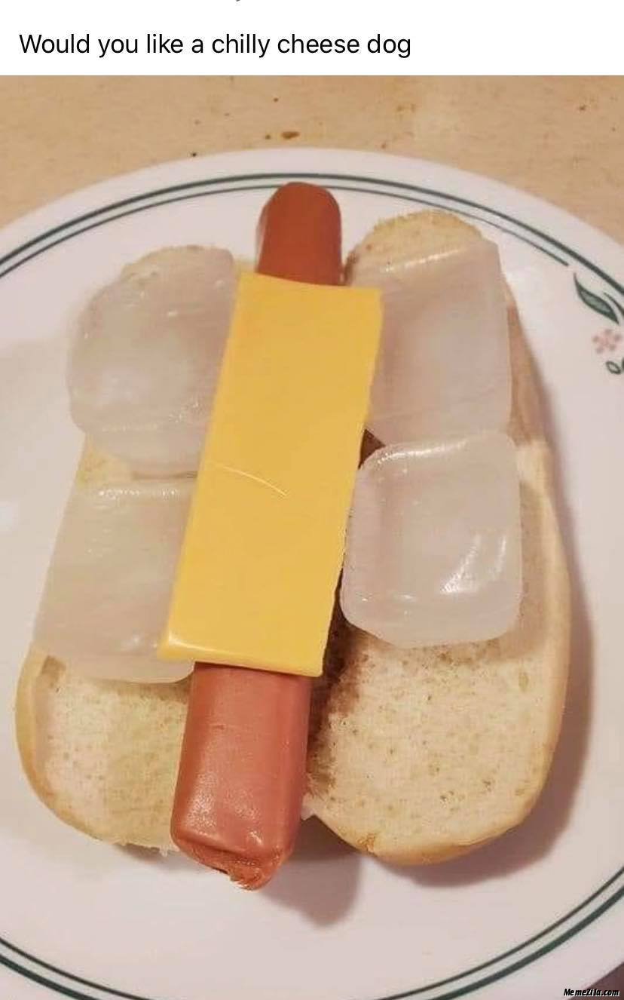

Chilly Cheese Dog

Description
Favorite food of internationally renowned hero and food connoisseur Sanic the Hedgehog. One bite of this dog will have you saying "Cumon step it up!!!!!"
Ingredients
- 1 tube steak, hereafter referred to as "weiner"
- 1 Wonder Bread brand hot dog bun
- 1 American cheese-like substance
- 4 ice cubes
Steps
- Place hot dog bun on plate in an opened position
- Place American cheese-like substance on bread
- Place weiner on American cheese-like substance
- Flank weiner with two ice cubes on either side
- Consume